Спуск полос
Спуск полос в CorelDRAW
Для примера я создал документ из 16 страниц формата А5, на которые поместил просто цифры (числа), соответствующие номеру страниц.
На рисунке ниже показана последняя страница документа.
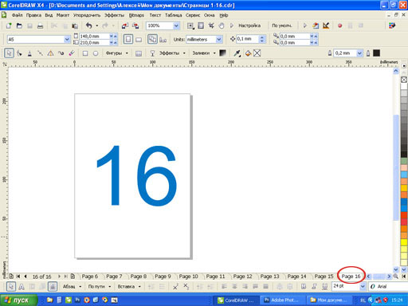
Теперь нажмём на Главной панели кнопку Печать и откроется окно настроек печати
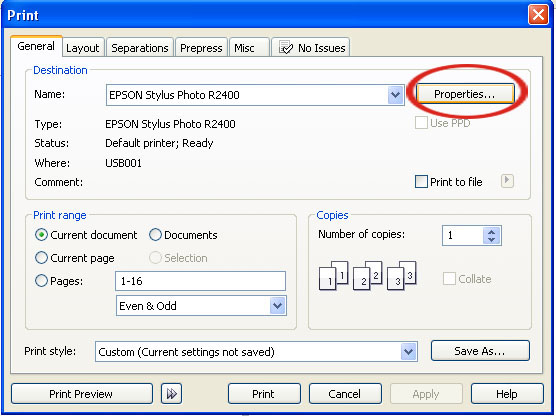
Выберите нужный Вам принтер и нажав кнопку Properties, перейдите в окно настроек печати данного принтера, где необходимо выбрать формат печатного листа и ориентацию бумаги. Если Вы ещё не определились с ориентацией бумаги, то в дальнейшем можно вернуться в это окно и изменить эту настройку.
Здесь мы не затрагиваем другие специфические настройки (плотность бумаги, лоток подачи), не относящиеся к раскладке.
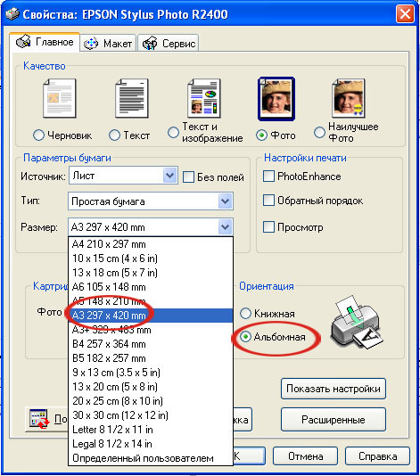
Нажав кнопку ОК, выйдите из окна настроек печати принтера и в окне Печать нажмите кнопку Просмотр печати.
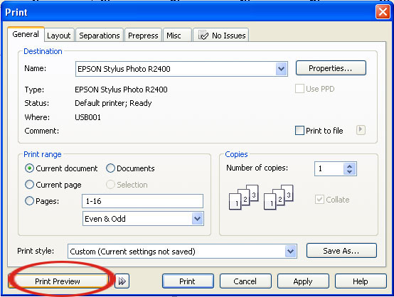
В открывшемся окне нажмите кнопку Наложение макета.
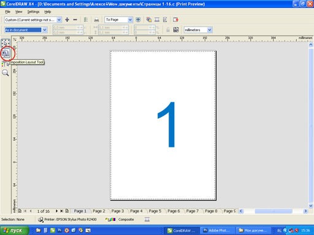
Выбрав один из подходящих пресетов в раскрывающемся списке Наложение макета, Вы увидите порядок расположения страниц макета на печатном листе.
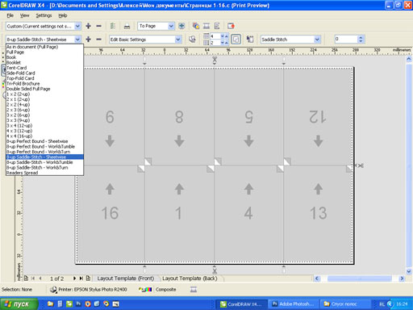
Перейдя на вкладку Шаблон макета (оборот), Вы увидите порядок расположения страниц макета на оборотной стороне печатного листа.
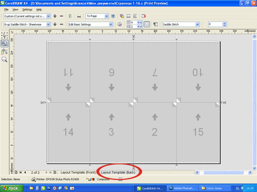
К стати, если Вы были внимательны, то заметили, что на формаие печатного листа А3 может уместиться только 4 страницы исходного макета формата А5. Поэтому, при таком варианте раскладки реальный формат отпечатанного изделия масштабируется до формата А6.
Если же быть более точными, то такой вариант раскладки может пройти только в случае использования струйного принтера, который может печатать без полей. В случае с лазерным принтером или офсетной печатью приходится учитывать непечатаемую область и использовать другие форматы печатных листов.
При необходимости можно создать свой пресет раскладки. Поскольку нас интересует расположение страниц на обеих сторонах листа, то выберем в качестве исходного пресет Книга.
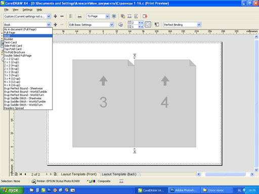
В окошках Страницы по горизонтали / по вертикали установите нужные значения (в нашем примере 4 и 2). На двух рисунках ниже Вы видите порядок расположения страниц макета в раскладке.
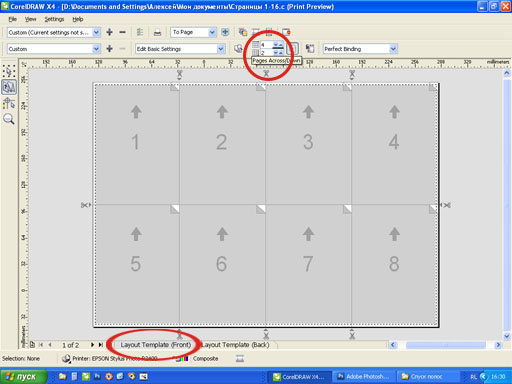
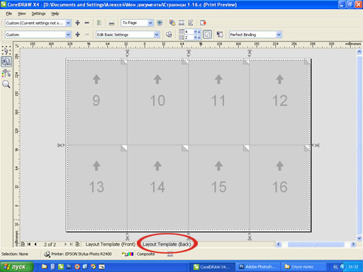
Поскольку страницы идут подряд, то нас это не устраивает. На мой взгляд, удобным будет вариант, когда все нечётные страницы будут располагаться на одной стороне печатного листа, а все чётные — на другой.
Для изменения порядка страниц выделите курсором поочередно каждый номер и введите с клавиатуры нужный номер порядка следования страниц. При этом учитывайте, что, если на стороне с нечётными страницами порядок их расположения был слева — направо, то на оборотной стороне листа соответствующие страницы надо располагать справа — налево (см. два рисунка ниже).
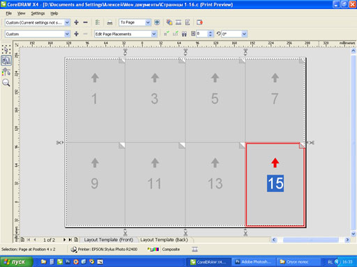
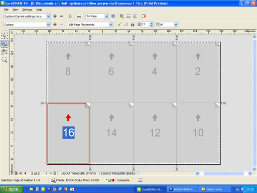
Теперь можно сохранить свой пресет раскладки для использования вдальнейшем. Для этого нажмите плюсик рядом с раскрывающимся списком пресетов раскладок.
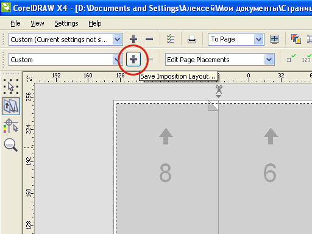
В открывшемся окне введите нужное имя и нажмите ОК.
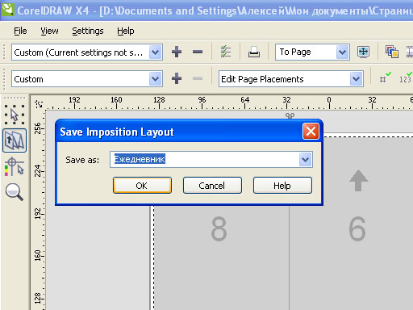
Чтобы увидеть сами страницы с их содержимым в полученной раскладке, нажмите слева вверху кнопку Pick Tool
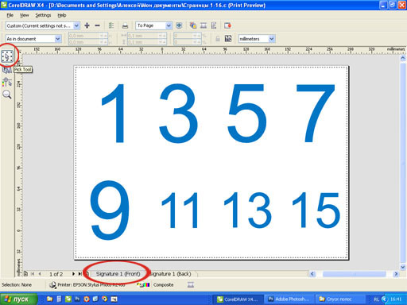
Выбрав вкладку Signatyre 1 (Back), Вы увидите страницы в раскадке на оборотной стороне печатного листа.
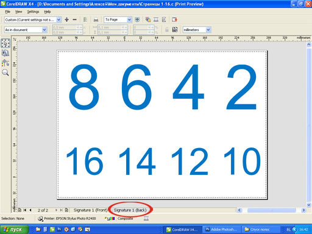
Чтобы увидеть совмещение шаблона раскладки с самими страницами, выбирете снова вверху слева кнопку Наложение макета и нажмите кнопку Шаблон/Документ Просмотр.
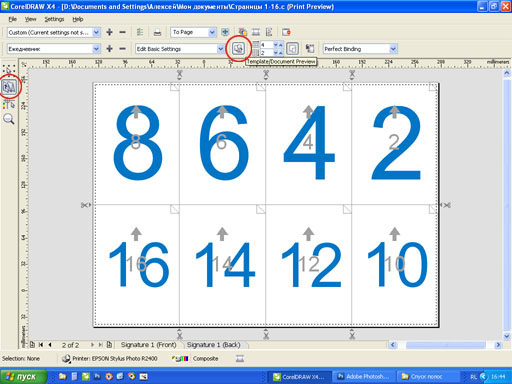
При необходимости повернуть страницы на 180 град., щёлкните по номеру в шаблоне раскладки и выбирете нужное значение в окошке Поворот страницы
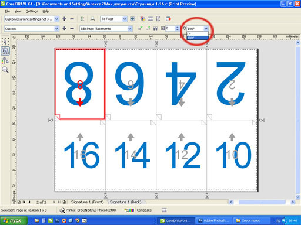
Обратите внимание, что номера, которые Вы видите в шаблоне раскладки — это не номера страниц, а порядок расположения страниц на печатном листе.
Добавьте в макет ещё 16 страниц. Так же нанесите на них крупные числа, соответственно номеру страницы. Откройте окно Просмотр печати, примените все те же настройки, описанные в примере и Вы увидите:
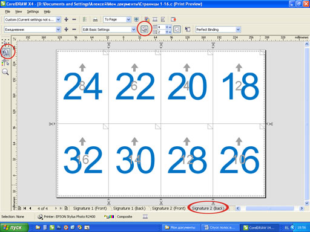
Специально для CDRPRO.RU